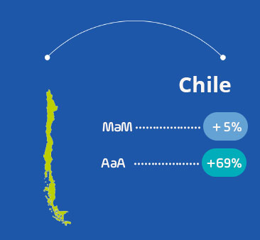

Impacto COVID19 en E-Commerce: América Latina
Abril 30, 2020 | Lectura 7 min
Hicimos este reporte para ayudar de manera gratuita a nuestros clientes, aliados y a la comunidad empresarial con una perspectiva y tendencias actualizadas del impacto de la pandemia Covid19 en el E-Commerce en América Latina. Partimos de la información de 115 millones de transacciones online procesadas anualmente en más de 22 mil comercios en Argentina, Brasil, Colombia, Chile, México, Perú y Panamá.
Impacto Covid19 en el E-Commerce: América Latina
Ventas de comercios
Doble clic en la convención para aislar la industria. Un clic para ocultarla.
Vista semanal durante el 2020
Países
- MaM: es el cambio porcentual entre Marzo y Abril de 2020 considerándolo del 1 a el 28 de cada mes.
- AaA: es el cambio porcentual entre Abril de 2019 y Abril de 2020 considerándolo del 1 a el 28 de cada mes.



Industrias
Participación de las industrias (MaM)
con respecto al valor de transacciones procesadas.
Un clic en la dona para mostrar la industria.
Cambio (%) de Ventas por Industria (MaM)
Industrias con mayor crecimiento
## [[1]]
## <h4 style="text-align:center;">Comidas</h4>
##
## [[2]]Si bien el consumo en restaurantes se ha frendo por la pandemia, el consumidor desde casa continúa solicitando alimentos frescos a supermercados y comidas preparadas en restaurantes. Gracias a los servicios a domicilio, hemos registrado un crecimiento de Marzo a Abril de 2020 del 131%. Aquellos restaurantes y tiendas que ya tenían una infraestructura digital definida, son los que han logrado capitalizar rápidamente esta forma de consumo.
## [[1]]
## <h4 style="text-align:center;">Ventas por catálogo</h4>
##
## [[2]]Esta cateogría reune una amplia variedad de comercios dedicados principalmente a ventas por catálogo, marketing multinivel, comercio minorista y mayorísta. Debido a que reune una amplia diversidad de comercios, es un muy buen indicio en general para el eCommerce observar un crecimiento de Marzo a Abril del 81% en esta categoría.
## [[1]]
## <h4 style="text-align:center;">Tecnología</h4>
##
## [[2]]Debido al cambio en los hábitos de consumo, el acceso a internet y a tecnología que permita su uso ha crecido de forma importante en las últimas semanas. Esta categoria ha tenido un incremento del 11% de Marzo a Abril del 2020 gracias al aumento en las compras de computadores, celulares, videojuegos, servicios de internet de banda ancha, hosting , entre otros.
## [[1]]
## <h4 style="text-align:center;">Servicios médicos</h4>
##
## [[2]]Los esfuerzos en atacar el impacto negativo que ha tenido la pandemia se manifiestan en el 49% de crecimiento que hubo en la industria de Servicios e insumos médicos. Se registrá un aumento importante en la ventas de farmacias y droguerías, la adquisición de equipo médicos para hospitales y la contratación de servicios médicos especializados.
## [[1]]
## <h4 style="text-align:center;">Servicios financieros</h4>
##
## [[2]]Las transferencias bancarias y el recaudo en facturación de las industrias con mayores movimientos financieros durante la crisis incrementaron el valor de transacciones procesadas en esta categoría un +18% de Marzo a Abril de 2020.
## [[1]]
## <h4 style="text-align:center;">Moda y calzado</h4>
##
## [[2]]A inicios de Marzo, cuando comenzó la emergencia sanitaria, esta categoría tuvo un decenso relevante llegando a su pico más bajo el 22 de Marzo. Su rápida recuperación en Abril se debe a que las marcas se han adaptado a la coyuntura ofreciendo productos de moda y calzado para usar en casa, con una comunicación orientada hacia la comodidad. Su crecimiento de Abril respecto a Marzo fue del 122%.
Industrias con menor crecimiento
## [[1]]
## <h4 style="text-align:center;">Transporte</h4>
##
## [[2]]Aerolineas, servicios de transporte colaborativo e intermunicipal decrecieron abruptamente en Marzo y respecto a Abril de 2020 cayeron un -71%. Lo anterior explicado por el temor al contagio del COVID-19 y las medidas de aislamiento.
## [[1]]
## <h4 style="text-align:center;">Turismo y recreación</h4>
##
## [[2]]Debido a las restricciones a los viajeros y las aglomeraciones, los servicios de recreación, agencias de viajes, operadores turísticos, reservaciones hoteleras y casinos han visto el arrazador golpe del cambio en el consumo de sus productos y servicios. Esta industria tuvo una caída del -65% de Abril 2020 respecto a Abril 2019 y del -39% de Abril 2020 respecto a Marzo 2020.
## [[1]]
## <h4 style="text-align:center;">Consultoría</h4>
##
## [[2]]Los servicios relacionados con compra y alquier de bienes raices, y servicios profesionales y consultoría se han reducido un -15% de Abril de 2019 respecto a Abril de 2020; y un -5% de Marzo de 2020 a Abril a 2020. El consumidor está mucho más cauteloso con sus gastos postergando incluso decisiones de inversión.
## [[1]]
## <h4 style="text-align:center;">Servicios públicos</h4>
##
## [[2]]El pago de servicios públicos como el agua, el gas, la energía y los gastos televisión por cable fueron parcialmente postergados o cancelados en países latinoamericanos como Colombia, Perú y Panamá. Al mismo tiempo, los impuestos tradicionalmente pagados en Marzo y Abril se vieron postergados en la mayoría de América Latina por orden de sus Gobiernos. Fuente
## [[1]]
## <h4 style="text-align:center;">Construcción</h4>
##
## [[2]]Si bien la construcción y el comercio al detal (tiendas de regalos, libros, souvenirs, floristerías, artículos de oficina, etc) han tenido un fuerte descenso en sus ventas, se espera un crecimiento en las próximas semanas; especialmente en Colombia donde han levantado las restricciones al sector y se ha ordenado impulsar las ventas de materiales de contrucción a través del eCommerce. Se decrecimiento de Marzo a Abril de 2020 fue del -35%.
## [[1]]
## <h4 style="text-align:center;">Asociaciones y ONGs</h4>
##
## [[2]]La solidaridad ante las dificultades nos ha unido como sociedad. El crecimiento de las transacciones procesadas en fundaciones, organizaciones de servicio social y asociaciones cívicas creció principalmente en Marzo de este año. Aún así, en Abril de este año se incrementó el valor de las transacciones procesadas en 9% más que Abril del año pasado lo que denota el apoyo a los más vulnerables en esta época. Si quiere saber cómo usted también puede ayudar, lo invitamos a conocer nuestra iniciativa: juntos somos más fuertes.